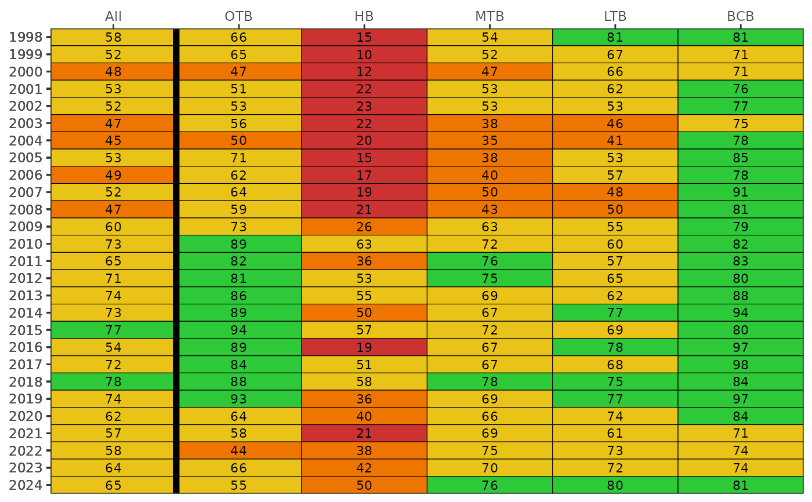

Show matrix of seagrass frequency occurrence by bay segments and year
Source:R/show_transectmatrix.R
show_transectmatrix.RdShow matrix of seagrass frequency occurrence by bay segments and year
Arguments
- transectocc
data frame returned by
anlz_transectocc- bay_segment
chr string for the bay segment, one to many of "HB", "OTB", "MTB", "LTB", "TCB", "MR", "BCB"
- total
logical indicating if average frequency occurrence is calculated for the entire bay across segments
- neutral
logical indicating if a neutral and continuous color scheme is used
- yrrng
numeric indicating year ranges to evaluate
- alph
numeric indicating alpha value for score category colors
- txtsz
numeric for size of text in the plot
- family
optional chr string indicating font family for text labels
- rev
logical if factor levels for bay segments are reversed
- position
chr string of location for bay segment labels, default on top, passed to
scale_x_discrete- plotly
logical if matrix is created using plotly
- width
numeric for width of the plot in pixels, only applies of
plotly = TRUE- height
numeric for height of the plot in pixels, only applies of
plotly = TRUE
Value
A ggplot object showing trends over time for each bay segment if plotly = FALSE, otherwise a plotly object
Details
Results are based on averages across seagrass species (Halodule, Syringodium, Thalassia, Ruppia, Halophila) by date and transect in each bay segment
The color scheme is based on arbitrary breaks at 25, 50, and 75 percent frequency occurrence. These don't necessarily translate to any ecological breakpoints. Use neutral = TRUE to use a neutral and continuous color palette.
References
This plot is a representation of Table 1 in R. Johansson (2016) Seagrass Transect Monitoring in Tampa Bay: A Summary of Findings from 1997 through 2015, Technical report #08-16, Tampa Bay Estuary Program, St. Petersburg, Florida.
Examples
if (FALSE) { # \dontrun{
transect <- read_transect()
} # }
transectocc <- anlz_transectocc(transect)
show_transectmatrix(transectocc)
